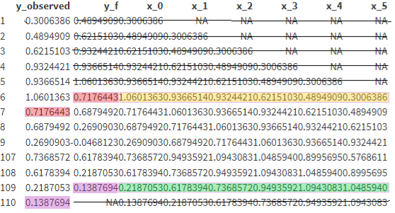
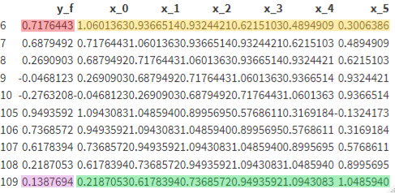
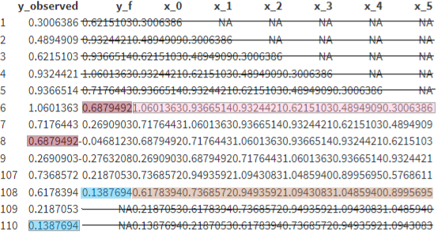
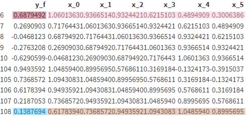
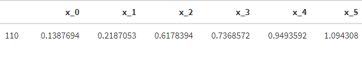

33 ML
33.1 Misc
- Notes from
- Deep networks suffer from the problem of instability for recursive forecasting, and it’s recommended to use direct forecasting
- Tree based models can only predict within the range of training data.
- Models seen used
- Ensemble combination: KNN, random forest and principal components regression together with ARIMA, Unobserved Components Model and linear regression
- Conditions in which these models perform poorly
- under 500 obs (need to reread the paper to get this more exact). Think at around this number, the ML models start to catch the statistical models
- additional explanatory variables have poor predictive power
- ts has high seasonality
- Always fit a statistical model for comparison
- Algorithm Specifications
- From Hyndman paper on Local vs Global modeling, Principles and Algorithms for Forecasting Groups of Time Series:Locality and Globality
- XGboost,
- subsampling=0.5
- col_sampling=0.5
- Early stopping on a cross-validation set at 15% of the dataset.
- Loss function is RMSE
- Validation error is MAE
- XGboost,
- LightGBM
- arg: linear_tree fits a piecewise linear model for each leaf. Helps to extrapolate linear trends in forecasting
- Seems to act like a basic distribution forest
- arg: linear_tree fits a piecewise linear model for each leaf. Helps to extrapolate linear trends in forecasting
- From Hyndman paper on Local vs Global modeling, Principles and Algorithms for Forecasting Groups of Time Series:Locality and Globality
33.2 Terms
- Short-Term Lags: Lags < Forecast Horizon.
- Direct Forecasting: Modeling each horizon separately
33.3 Preprocessing
- Difference until stationary
- Since tree models can’t predict outside the range of the their training data, trend must be removed.
- In addition to the deterministic trend, this approach also removes stochastic trends.
- Forecasts will need to be back-transformed
- forecast = differenced forecast + previous value
- Then recursively for the next forecasts in the horizon
- Log transform
- forecasts need to be back-transformed
- Target encode cat feature then lag
- Scale series
- Remove time stamp after creating date features
- Date features will help keep track of time
- These will need to be one-hot encoded or some other discrete/categorical transformation
- Date features will help keep track of time
33.4 Multi-Step Forecasting
Misc
- Notes from: 6 Methods for Multi-step Forecasting
- Example dataset
.png)
- t-3 through t-0 are the predictors
- t+1 through t+4 are potential outcome variables
- Example dataset
- Notes from: 6 Methods for Multi-step Forecasting
Recursive (aka Iterative) - Training a single model for one-step ahead forecasting. Then, the model’s one-step ahead forecast is used as data to get the 2nd-step ahead forecast.
- The one-step ahead forecast is NOT added to the training data and the model refitted. It replaces the 0th lag value in the training data, and the previous 0th lag data becomes the 1st lag data, etc. The final lag (e.g t-3 in the example data) that was used in training the model is discarded. Therefore, the same number of lags that was used in training the model remains the same. This updated dataset becomes “new data” and along with the original model are used as input for
predict - This process is iterated using previous forecasts to get predictions for multiple steps ahead
- Method leads to propagation of errors
- The one-step ahead forecast is NOT added to the training data and the model refitted. It replaces the 0th lag value in the training data, and the previous 0th lag data becomes the 1st lag data, etc. The final lag (e.g t-3 in the example data) that was used in training the model is discarded. Therefore, the same number of lags that was used in training the model remains the same. This updated dataset becomes “new data” and along with the original model are used as input for
Direct - Builds one model for each horizon
Each model trains on a lead of the outcome variable that matches the horizon step
- e.g. the model forecasting the 2nd step-ahead value will train with an outcome variable that is t+2
No previous forecast is used to predict a forecast ahead of it.
Assumes that each horizon is independent which is usually false
Example
from sklearn.multioutput import MultiOutputRegressor direct = MultiOutputRegressor(LinearRegression()) direct.fit(X_tr, Y_tr) direct.predict(X_ts)- “Y_tr” contains lead variables for each step in the forecast horizon
Example: Multi-step time series forecasting with XGBoost
- Codes a sliding-window (don’t think it’s a cv approach though) and forecasts each window with the model
- Not exactly sure how this works. No helpful figs in the article or the paper if follows, so would need to examine the code
Example: Preprocessing training data for 1 then 2 steps ahead and forecasting (post, Code >> Time Series >> direct-multistep-forecasting-regression.R)
- The FIRST 9 rows and the LAST 4 rows of the training data before preprocessing are shown
- “y_observed” is the original outcome column
- “y_f” is y_observed but stepped forward
- “x_0” is a copy of y_observed
- “x_1” to “x_5” are lags of y_observed
- 1-Step Ahead Training Data
- Before Preprocessing
- “y_f” has been stepped forward 1-step
- “y_observed” and rows with NAs are deleted
- Even though 6 rows are deleted from the training data, all values are used for training
- After Preprocessing
- The model is fit using this data
- Before Preprocessing
- 2-Step Ahead Training Data
- Before Preprocessing
- “y_f” has been stepped forward 2-steps
- “y_observed” and rows with NAs are deleted
- Even though 7 rows are deleted from the training data, all values are used for training
- After Preprocessing
- The model is fit using this data
- Before Preprocessing
- Forecast
- Each step-ahead model predicts on this same row of data which is the final row of the training data (row 110)
- Note that this row wasn’t used to train the model.
- Each step-ahead model predicts on this same row of data which is the final row of the training data (row 110)
Direct-Recursive (aka Chaining) - Combo of Recursive and Direct
- Recursive - Previous forecasts are used as data to get the next step-ahead forecast
- Direct - The previous forecasts are added to the training data and the model is retrained for each horizon.
- More computationally intensive since there’s more data and a model has to trained for each horizon step.
- Can’t be parallelized since the process is sequential.
Data as Demonstrator (DaD) - Error correction method for the Recursive method
- Use the training set to correct errors that occurs during multi-step prediction to mitigate the propagation of errors that occurs in recursive forecasting.
- Iteratively enriches the training set with these corrections after each recursive forecast.
- github
Dynamic Factor Machine Learning (DFML) - A feature reduction method is applied to a multivariate or multistep time series and the model trains on the components as outcome variables. Then, the forecasts are backtransformed.
- Article uses the direct method
- See article for code. Not sure how effective it is but the code is pretty simple
- Article uses the direct method
Multi-Output - A single model which learns all the forecasting horizon jointly
- Goal is to capture the dependencies between forecasts better.
- Output is a multi-step output all at once
- Example uses KNN but the article mentions regularized regression, rf, DL algorithms can be used
- Think this sounds like a multivariate approach and not a global approach
- Preprocessing should include removing the seasonality.
- See article for paper reference
Horizon as a Feature
Notes from Forecast Multiple Horizons: an Example with Weather Data
Global approach where design matrices for each horizon are stacked (i.e. bind_rows) on top of each other to create a global design matrix. A horizon feature variable is added (e.g. 1 for the 1-step, 2 for the 2-step, etc.) to index each sub-design matrix.
33.5 Feature Engineering
- Also see Feature Engineering, Time Series
- Date time Features
Minutes in a Day
Quarter of the Year
Hour of Day
Week of the Year
Season of the Year
Weekend or Not
Daylight Savings or Not
Public Holiday or Not
Before or After Business Hours
Example: py
ts_data['hour'] = [ts_data.index[i].hour for i in range(len(ts_data))] ts_data['month'] = [ts_data.index[i].month for i in range(len(ts_data))] ts_data['dayofweek'] = [ts_data.index[i].day for i in range(len(ts_data))]
- Lags - Lags of the target variable
- {{pandas}} has a
shiftfunction
- {{pandas}} has a
- Window Statistics (See Python, Pandas >> Time Series >> Calculations >> Aggregation)
- Sliding window features - at each time point, a summary of values over a fixed window of prior timesteps
- Rolling window statistics - a range of values that includes the time point itself as well as some specified number of data points before and after (?) the time point used
- {{pandas}} has a
rollingfunction
- {{pandas}} has a
- Expanding window statistics
{{pandas}} has an
expandingfunctionExample: minimum, mean, and maximum
# create expanding window features from pandas import concat load_val = ts_data[['load']] window = load_val.expanding() new_dataframe = concat([window.min(), window.mean(), window.max(), load_val. shift(-1)], axis=1) new_dataframe.columns = ['min', 'mean', 'max', 'load+1'] print(new_dataframe.head(10)) min mean max load+1 2012-01-01 00:00:00 2,698.00 2,698.00 2,698.00 2,558.00 2012-01-01 01:00:00 2,558.00 2,628.00 2,698.00 2,444.00 2012-01-01 02:00:00 2,444.00 2,566.67 2,698.00 2,402.00 2012-01-01 03:00:00 2,402.00 2,525.50 2,698.00 2,403.00 2012-01-01 04:00:00 2,402.00 2,501.00 2,698.00 2,453.00 2012-01-01 05:00:00 2,402.00 2,493.00 2,698.00 2,560.00 2012-01-01 06:00:00 2,402.00 2,502.57 2,698.00 2,719.00 2012-01-01 07:00:00 2,402.00 2,529.62 2,719.00 2,916.00 2012-01-01 08:00:00 2,402.00 2,572.56 2,916.00 3,105.00 2012-01-01 09:00:00 2,402.00 2,625.80 3,105.00 3,174.00
- Use of singular value decomposition to learn specific patterns across a grouping variable (e.g. department specific patterns across stores)
- Perform holiday adjustments to the data
- Get the training data for a specific department into a matrix with weeks as rows and stores as columns.
- Use SVD to produce a low-rank approximation of the sales matrix. The winner reduced the rank from 45 (# stores) to between 10-15.
- Reconstruct the training matrix using the low-rank approximation.
- Forecast the reconstructed matrix using an STL decomposition followed by exponential smoothing of the seasonality adjusted series. This was conducted in R using the stlf function of the forecast package.
- External Features
- average weekly temperature by region,
- the fuel price by region,
- the consumer price index (CPI)
- unemployment rate.
- Example: From Hyndman local vs global models paper (See Algorithm Specifications section)
- Used
- 12 lags (length of shortest series in M4)
- frequency features (fourier series?)
- other features (tsfeatures PKG)
- tsfeatures measure a bunch of ts characteristics.
- These would be just 1 number per series. I’m not sure how you use them as a predictors
- Data was a matrix stack of all the time series in the M4 competition
- maybe since it’s a ts stack, the tsfeatures stuff has enough variance to useful in prediction
- Used